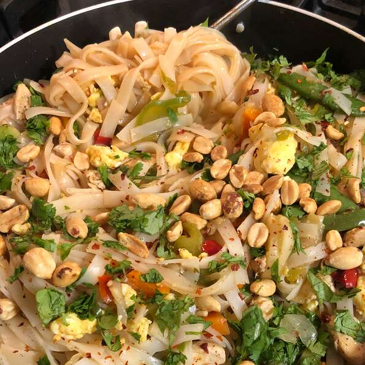

Pad Thai

Description
This is the best Pad Thai recipe ever. My father's Pad Thai is better than most Thai restaurants! I like it because of all the fresh ingredients, it is not greasy.
It's satisfying and healthy. There is no meat in this recipe.
Ingredients
- 4 eggs
- 6 ounces pad thai rice noodles
- 2 teaspoons Madras curry powder
- ⅔ cup chopped peanuts
- ¾ pound bean sprouts
- 1 cup green onions cut into 1-inch pieces
Steps
- Bring a pot of water to a boil. Blanch the bean sprouts in boiling water for approximately 30 seconds, remove, and drain well. When the water returns to a boil, add noodles. Cook for 3 to 5 minutes until tender but firm; drain and rinse under cold water
- Beat the eggs with a pinch of salt in a small bowl. Stir together the lime juice, ketchup, brown sugar, and fish sauce in a separate bowl; set aside.
- Heat the oil in a wok or large skillet over medium-high heat. Fry the garlic for a few seconds. Add the pepper flakes and carrot, and cook for one minute, then remove. Add the beaten egg, and gently scramble. When the eggs have set, pour in the carrots, sauce, bean sprouts, noodles, peanuts, and green onion; toss together.